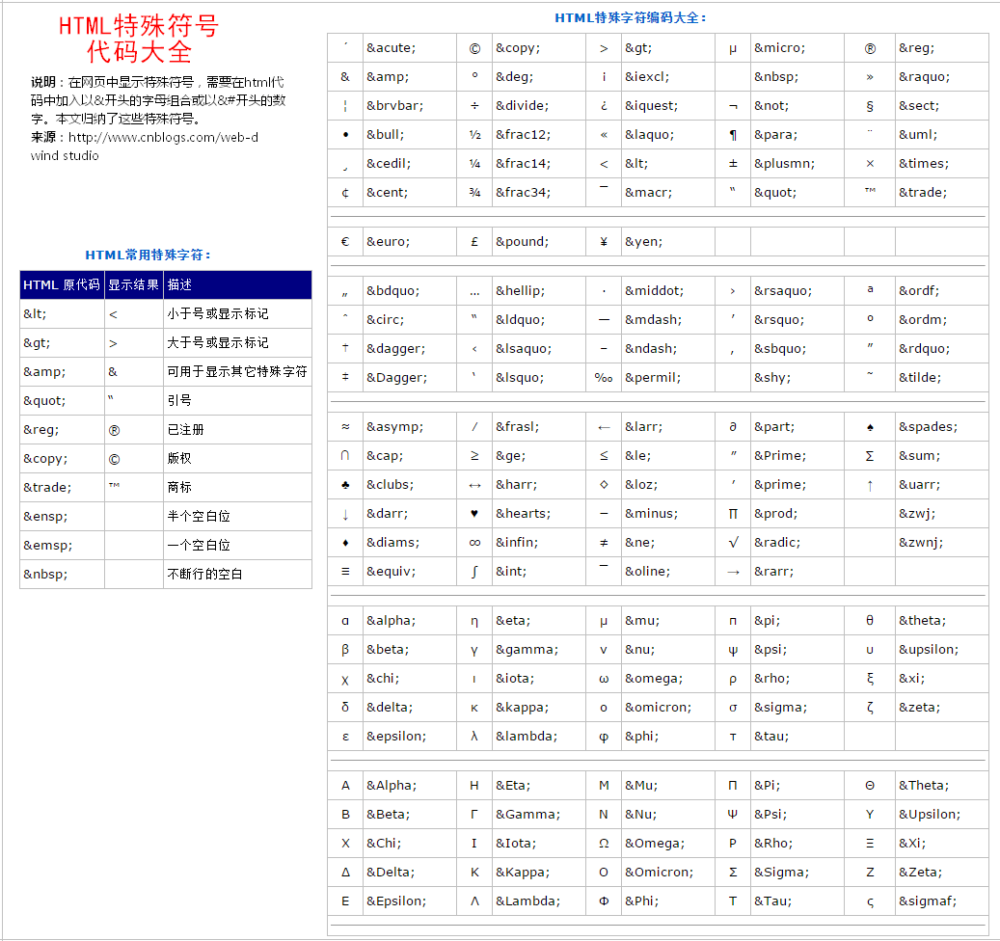
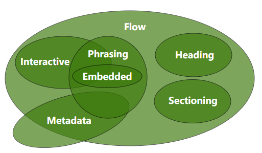

HTML标签 基础知识巩固笔记
基本的 HTML 标签
初始代码
1 | <!DOCTYPE html> <!-- 告诉浏览器这是一个html文件 --> |
标题与段落
1 | <!-- 在一个网页中,h1标题最为重要,并且一个.html文件中只能出现一个h1标签 --> |
文本修饰
1 | <p> |
图片标签
1 | <!-- |
跳转链接
1 | <!-- |
特殊符号

列表标签
1 | <!-- 列表之间可进行嵌套 --> |
表格标签
1 | <!-- |
表单标签
1 | <form action=""> <!-- 表单的最外层容器 action:提交的地址--> |
div与span
1 | <!-- div:做一个区域划分的块 --> |
br与wbr
1 | // br标签表示换行操作,wbr标签表示软换行操作。 |
pre与code
1 | // pre元素可定义预格式化的文本。被包围在per元素中的文本通常会保留空格和换行符。 |
map与area
1 | // 给特殊图形添加链接,area能添加的热区的形状：矩形rect 圆形cicr 多边形poly |
embed与object
1 | // embed与object能够嵌入一些多媒体,如flash动画,插件等。基本使用没有太多区别,主要是为了兼容不同的浏览器。object元素需要配合param元素使用。 |
audio与video
1 | // audio标签表示嵌入音频文件,video标签表示嵌入视频文件。默认控件是不显示的,可通过controls属性来显示控件。loop是否循环。autoplay自动播放。 |
文字注解
1 | // ruby标签定义ruby注释(中文注音或字符),rt标签定义字符(中文注音或字符)的解释或发音。 |
引用标签
1 | <blockquote>引用大段的段落解释</blockquote> |
链接标签
1 | // 作用：引入外部的资源文件 |
meta标签
1 | // <meta> 元素可提供有关页面的元信息（meta-information），比如针对搜索引擎和更新频度的描述和关键词。 |
iframe标签
1 | iframe元素会创建包含另外一个文档的内联框架(即行内框架)。 |
HTML标签类型分类
使用类型分类标签
1 | 块级标签(block)： |
使用内容分类标签
HTML 标准网站

1 | Flow : 流内容,表示网页中可以感知到的标签 |
使用显示分类标签
1 | 替换元素：浏览器根据元素的标签和属性,来决定元素的具体显示内容。 |
HTML标签嵌套规范
1 | 块标签可以嵌套内联标签： |
本博客所有文章除特别声明外，均采用 CC BY-NC-SA 4.0 许可协议。转载请注明来自 Zhou的博客！